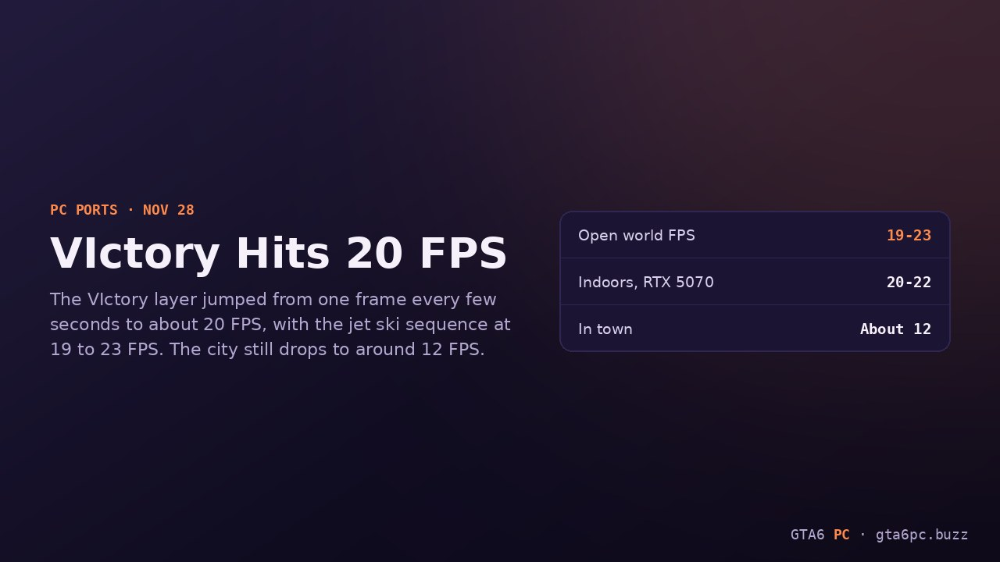

GTA 6 PC port hits 20 FPS on VIctory
The unofficial GTA 6 PC port built on the VIctory compatibility layer has gone from drawing one frame every few seconds to running at about 20 frames per second, in the space of a few days. New footage shows the open world of Leonida running on Windows, with the jet ski sequence at 19 to 23 FPS. The city is still slow, the graphics still have visible bugs, and no build is stable or safe to download, but the jump is the fastest progress the port race has shown yet.

The jump in one week
Unofficial efforts to get Grand Theft Auto VI running on PC have jumped from taking seconds to draw a single frame to around 20 frames per second in just a few days. TweakTown reported the milestone on November 26, 2026, with new footage showing the open world of Leonida running on Windows through VIctory, the open source compatibility layer at the centre of the port race.
The latest clip was posted to X by MrPoulpy, who claims, in French, that it is the most advanced version of GTA 6 on PC currently available, with a few shader issues and frame rate drops in the city. The footage carries a watermark from another user, AzRage, and the window title reads Victory, alongside a live frame counter that sits at 30 FPS in menus and 19 to 23 FPS while riding a jet ski and driving along the coast. In game frame rates drop to around 12 FPS in town. TweakTown says it was unable to independently verify who made the build or what hardware it ran on, so the clip is real footage of a real build, but the setup behind it is unconfirmed.
That is the same pattern as every claim this week. The footage is genuine, the measurements are the builder's own, and nobody outside the project can test the build. Our FPS explainer covers why one tracker says 20 FPS and another says 5 FPS, and why both can be right.
What VIctory is
VIctory is an open source compatibility layer that runs GTA 6's Xbox code directly on Windows, from files the user supplies. It does not contain the game, and it distributes no game files. Its own README still lists the game's first mission intro as being drawn at 1 to 2 seconds per frame, which shows how far the community forks have travelled in a few days: from seconds per frame on the original project to about 20 FPS on the forks.
The layer can run GTA 6's menus and render the first mission's intro. A separate NVIDIA tuned build, from a developer known as ZETTROX, reportedly reached Jason's first mission after Lucia's prologue, but that milestone was not confirmed for the original VIctory build. The distinction matters. VIctory is the base layer, and the forks built on it are moving faster than the original project, each with its own claims and its own hardware.
The NVIDIA fork and the Series S trick
The fastest numbers come from a public fork called VIctory-NVIDIA. PC Games Hardware reports that it averages 20 to 22 FPS indoors on an RTX 5070 graphics card and a Ryzen 7 9800X3D processor. That is a strong gaming PC, a current generation mid range graphics card paired with one of the fastest gaming processors available, and it still manages only about 20 FPS indoors.
The fork gets there with a trade off. It uses the Xbox Series S graphics profile on Windows, so GTA 6's upscaled image starts from a 960 by 540 render, with ray tracing largely disabled. The final output resolution and upscaling method are not reported, but the starting point is a low resolution image, which is why the frame rate holds up indoors and why the picture looks soft. The footage shows missing shoreline water and magenta streaks on a road, but that footage was not independently verified as coming from VIctory-NVIDIA, so those glitches cannot be attributed to its graphics profile.
The hardware lesson is blunt. Even with a strong PC and a cut down graphics profile, the port runs at about two thirds of the console frame rate, in light scenes. In the city it falls further. Anyone promising a smooth 60 FPS GTA 6 on PC today is selling a fake.
What the footage still gets wrong
Graphical bugs are visible throughout the new clip, including black holes where shoreline water should be and magenta streaks along a road. Those are the signs of a compatibility layer that is still translating the game's rendering calls, not a finished port. Shader stutter is still visible, and performance in the city is untested at any stable level.
The independent tracker VGNW, which cross checks the fan run trackers, the projects' own measurement logs and news reports, puts the best credible frame rate at around 20 FPS, with 19 to 23 FPS logged in light scenes and 6 to 13 FPS in the city, even on the most powerful cards such as the RTX 4090 and RX 7900 XTX. About 15 projects have got the game world on screen, and in at least 6 of them you can control the character. None of them is stable, and none of them is a game you can play through.
How this fits the rest of the race
The 20 FPS milestone sits alongside the other stories of the week. ScarlettPort became the first port with a public release, reaching about 20 FPS on an RX 9060 XT, and our report on it has the details: ScarlettPort goes public. A separate XCL clip claims 30 FPS in the opening boat scene, which we covered in our report on the 30 FPS claim. And the two furthest projects, Belobug and CGBJ, both disappeared within about 36 hours, as our November 28 update reports.
Put together, the picture is consistent. The ports are real, they are improving fast, the best credible speed is about 20 FPS, and the projects keep vanishing as fast as they appear. The 20 FPS figure is a direction, not a benchmark, and it comes from light scenes on strong hardware with a cut down graphics profile.
What it does not mean
It does not mean GTA 6 is playable on PC. No port is stable, no port has a public download you should trust, and Rockstar has announced no official PC version. Take-Two filed a DMCA notice on November 24 targeting the Leonida port's network of 3,007 repositories, and several other unofficial port repositories have since disappeared without a public takedown notice, so it is unclear whether the filing caused those removals.
The warning has not changed since launch day. Most files going around as a GTA 6 PC download carry password stealing malware, and none of the real projects distributes a finished game. If a site offers you a complete GTA 6 PC download, a single installer, or a torrent of the full game, it is a fake. Do not download anything, do not pay anyone, and do not enter your passwords anywhere that promises early access. When there is a real PC version, Rockstar will announce it, and we will cover it here.
Quick answers
How fast does the GTA 6 PC port run now?
The best credible figure is about 20 FPS. Footage of the VIctory layer shows the jet ski sequence at 19 to 23 FPS, menus at 30 FPS, and the city at about 12 FPS. A public fork called VIctory-NVIDIA averages 20 to 22 FPS indoors on an RTX 5070 and Ryzen 7 9800X3D, according to PC Games Hardware. The independent tracker still puts the best credible frame rate at about 20 FPS, with 6 to 13 FPS in the city.
What is VIctory?
VIctory is an open source compatibility layer that runs GTA 6's Xbox code directly on Windows, using game files the user supplies. Its own README still lists the game's first mission intro as being drawn at 1 to 2 seconds per frame, while community forks have pushed far beyond that. It is unofficial, unauthorised, and built from leaked files.
What PC hardware ran the 20 FPS build?
PC Games Hardware reports that the VIctory-NVIDIA fork averages 20 to 22 FPS indoors on an RTX 5070 graphics card and a Ryzen 7 9800X3D processor. TweakTown could not independently verify who made the newest footage or what hardware it ran on, so that hardware figure comes from the fork's own reporting, not from the clip.
Why is the frame rate lower in the city?
The city is the hardest scene to render, with dense traffic, crowds, physics and buildings all competing for the same frame. The jet ski footage is open water, which is a light scene. The tracker VGNW reports 6 to 13 FPS in the city on the most powerful cards, and the footage itself shows the frame rate dropping to about 12 FPS in town.
Can I download the VIctory GTA 6 port?
No, and you should not try. VIctory is not a finished game and it distributes no game files. Most files circulating as a GTA 6 PC download carry password stealing malware. Take-Two filed a DMCA notice on November 24 targeting 3,007 repositories in the Leonida port network, and several port repositories have since disappeared.
Is 20 FPS the best any GTA 6 PC port has reached?
About 20 FPS is the best credible, independently tracked figure. ScarlettPort, the first port with a public release, also reaches about 20 FPS on an RX 9060 XT. Claims of 30 FPS come from light scenes, such as the XCL boat footage, and no logged test has held 30 FPS in the city.
Last updated . We update this page when Rockstar announces anything new.